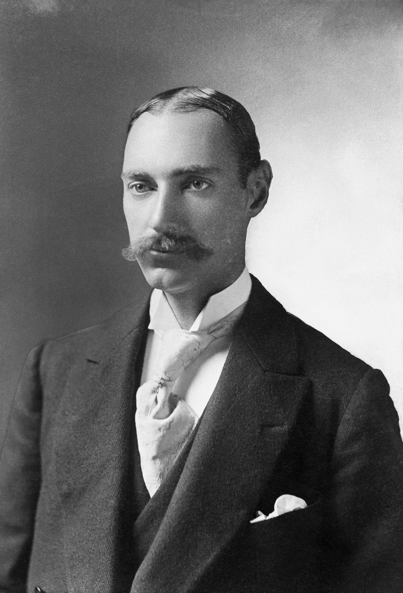
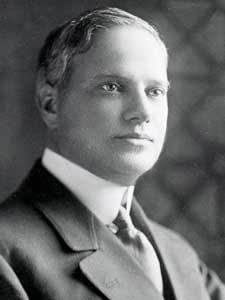
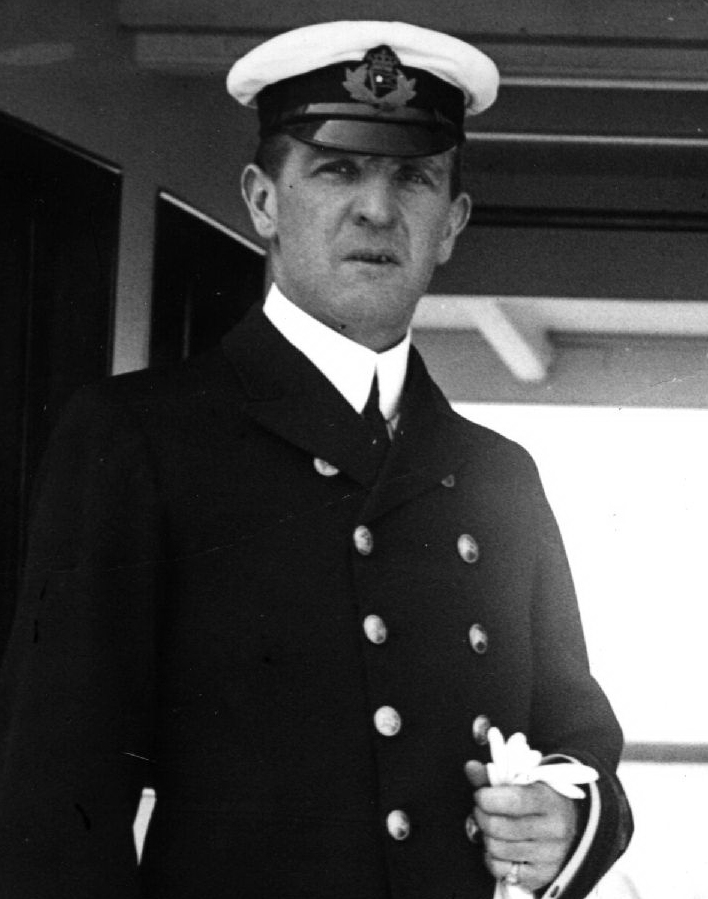

John Jacob Astor IV
Homme d'affaires américain très riche, décédé lors du naufrage.

Benjamin Guggenheim
Industriel américain, connu pour son courage et son élégance pendant le naufrage.

Margaret "Molly" Brown
Passagère de première classe, célèbre pour avoir aidé à sauver des vies et pour son courage.

Joseph Bruce Ismay
Président de la White Star Line, critiqué pour avoir survécu au naufrage.

Thomas Andrews
Architecte du Titanic, présent pour superviser le voyage inaugural, décédé dans le naufrage.

Edward Smith
Capitaine du Titanic, connu pour son calme et son expérience, mort lors du naufrage.

William McMaster Murdoch
Officier du Titanic, héros du pont, a aidé à sauver des passagers avant de périr.